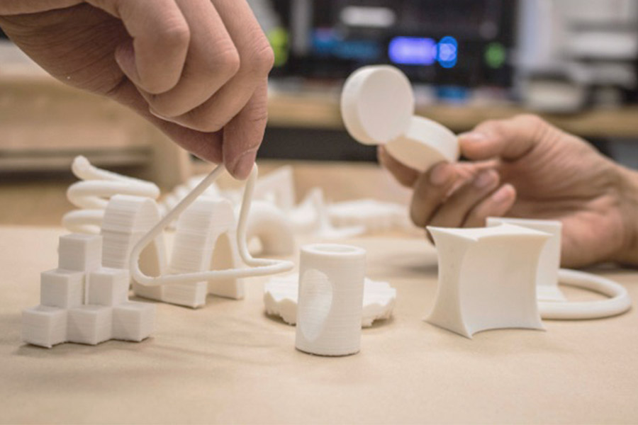
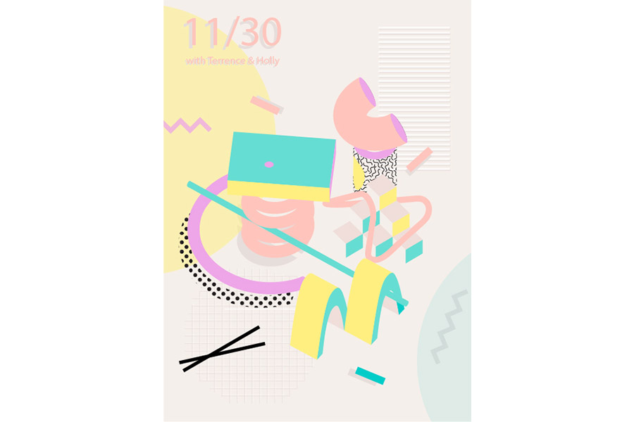
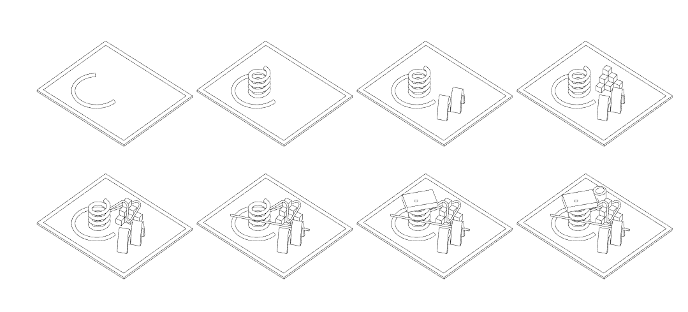
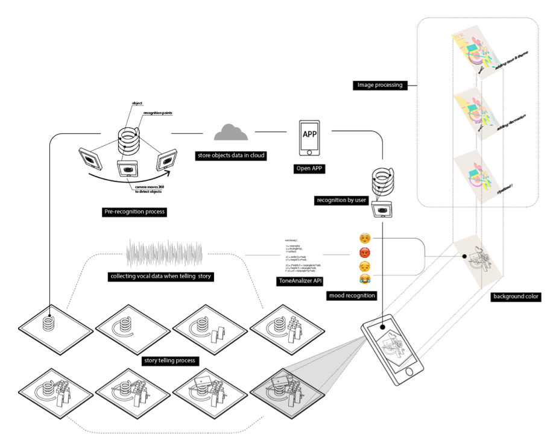

Prototype of story telling board and 3d printed metaphorical objects.

Example of generated image through the pattern made on the story board.
DESIGN PROCESS
Illustration of Engagement Process

Illustration of function flow
Objects in different shapes are designed to be metaphors for participants to transform intangible ideas into context. At the end of the story or conversation, participants, for example family members, could take a picture of the board through the AR App, different arrangements of objects will trigger different kinds of shaders that will be added onto the picture. The background color will reflect participants’ emotions, for example, red represents angry and green represents relaxing etc. A sound sensor will be installed beneath the board, which will capture the dialogue and later on Tone Analyzer API will analyze the information and show the result by colors. The final image, which generated by the composition of objects and emotion-representative colors, will be saved as an image diary.
